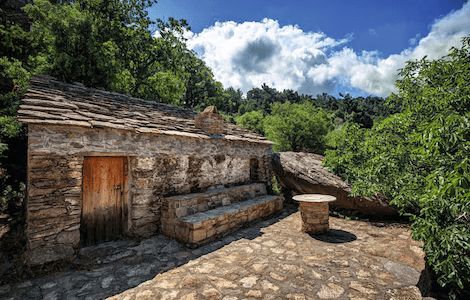
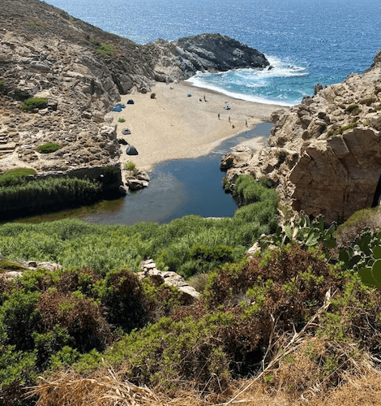
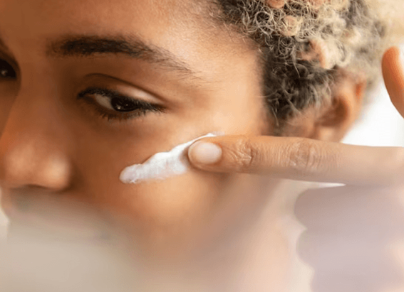
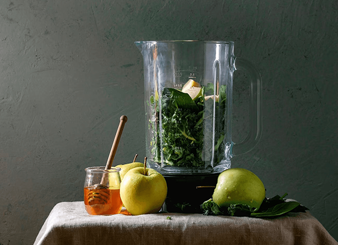
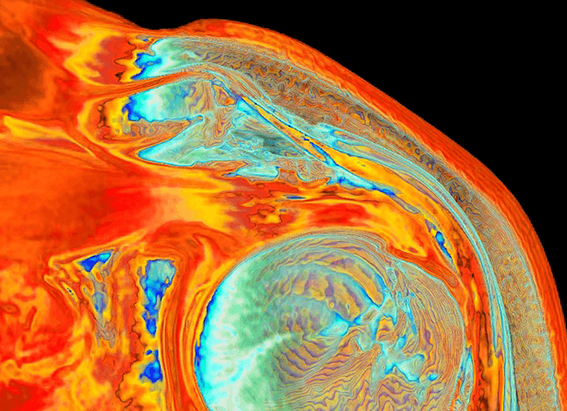

NATIONAL GEOGRAPHIC
Exploring Ikaria, Greece's island of immortals
TRAVEL
- 
- 
In the golden haze of a September afternoon, my pulse races as I scramble over wind scarred granite rocks and drop into lichen-draped holm oak woods in Magganitis on Ikaria’s southwest coast. Above me, ragged, cloud-wisped mountains punch nearly 3,500ft from sea to summit and huge boulders litter the landscape as if the Greek gods have dropped their marbles.
The faint, overgrown trail isn’t easy to follow, throwing up many dead-ends, but I’m in good company. Alexandros, my host where I’m staying at Ikaria Studios, bounds ahead, sometimes stopping to pick a ripe fig or point out an endemic wild herb with no English translation. In his seventies, he’s as fast and nimble as one of the island’s wild goats.
“When I was young, we had to climb these monopátia (old footpaths) to visit friends and family, swap homegrown produce and buy groceries,” he says. “Before the roads were finished in the mid-1990s, these tracks were the only way up to hamlets in the mountains; the only way home. And you know what? It kept us fit, both in body and up here” he chuckles, tapping his head.
In The Blue Zones: 9 Lessons for Living Longer, The New York Times bestselling author and National Geographic Fellow Dan Buettner zooms in on the world’s five Blue Zones, places with inhabitants of remarkable longevity, with incredibly high percentages of centenarians. Ikaria, which is just 30 miles off the coast of Turkey, in the eastern Aegean, is one of them alongside Sardinia (Italy), Okinawa (Japan), Nicoya (Costa Rica) and Loma Linda (California). More than 30% of Ikarians live into their nineties, generally free from chronic illness and dementia, and many hit 100.
One possible reason for this is genes. But Ikarians also benefit from an outdoor lifestyle in tune with nature, a plant-based diet rich in wild herbs, vegetables, pulses, olive oil and natural wine, a lack of stress and tight-knit communities. Today’s centenarians have had tough, self-sufficient lives, working in the fields and tending vines and olive groves, often without roads, phones or convenience foods. In short, the opposite of what the western world perceives as progress.
In Ikaria, no one looks at the clock and time moves in a slow, dreamlike way but that suits me just fine. My days slip into an intuitive rhythm. In the mornings, I swim off white-pebble coves, licked by a glassy turquoise sea. In the afternoon, Alexandros serves fish fresh from his boat, which we eat with our fingers. If the mood takes me, I head out along treacherously twisty, cliff-skimming roads, past blue-domed orthodox churches and olive groves droning with cicadas, rarely meeting another car.
Bathing in the south coast’s hot springs superheated at temperatures between 31C and 58C and among the world’s most radioactive is cited as another contributing factor to the islanders’ longevity. The town of Therma, with its ruined Roman baths, has free public hot springs that are a popular choice for a dip, but Lefkada a couple of bays over is quieter. I slip straight from the rocks to drift in piping-hot healing waters, rich in radon, iron and sulphur, and smelling faintly of rotten eggs.
Of gods and mountains
The coast is ravishing but, as all Ikarians say, you feel the island’s true heartbeat in the mountains of the north. Here Ikaria’s otherness is most apparent; forged by a period of reclusiveness born out of conflict in the ‘century of obscurity’ (1521 to 1601). During this time, Turkish pirates drove islanders into the hills, where they hid in chimney-less, windowless ‘anti-pirate’ houses, capped off by giant rocks that were the only thing visible from a distance.
I follow a zigzagging road through a pine forest, past vineyards and rugged, heather clad slopes to the most impressive example of this architectural legacy: Theoktistis monastery, wedged between boulders, like something from a Stone Age fairytale. When I arrive at dusk, the sun’s last rays are illuminating the chapel’s faded icons and silhouetting the forested mountains, which dip to the sea, as if touched by a celestial hand.
Comments :
- john Very good
- john Very good
Leave a Reply
Your email address will not be published. Required fields are marked*
Related posts:
-
Vitamin C, retinol, biotin Here’s what your skin actually needs
As the body’s largest organ, it makes sense that the skin should be kept healthy and clean. Plus, vanity is a strong motivator humans may have evolved to analyze others’ skin to determine their health
View article -
Chicken soup Tea Here’s what to feed your body when it’s sick
Chicken soup. Half a grapefruit. Steaming hot tea. When you’re sick everyone from grandma to the next-door neighbor has a helpful suggestion for food that will put you on the road to recovery
View article -
Frozen shoulder is a real condition and it mostly affects women
Ford has noticed that a subset of her patients all women entering or past menopause come to their appointments with a seemingly non gynecological issue: adhesive capsulitis or “frozen shoulder,”
View article